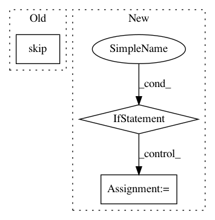

2577097f8f337da7af0a6b968ea40f8b5fe163f8,hyperspy/tests/signal/test_tools.py,Test3D,test_swap_axes_simple,#Test3D#,338
Before Change
def test_swap_axes_simple(self):
s = self.signal
if s._lazy:
pytest.skip("LazyS do not support axes swapping")
assert s.swap_axes(0, 1).data.shape == (4, 2, 6)
assert s.swap_axes(0, 2).axes_manager.shape == (6, 2, 4)
assert s.swap_axes(0, 2).data.flags["C_CONTIGUOUS"]
After Change
chunks = s.data.chunks
assert s.swap_axes(0, 1).data.shape == (4, 2, 6)
assert s.swap_axes(0, 2).axes_manager.shape == (6, 2, 4)
if not s._lazy:
assert not s.swap_axes(0, 2).data.flags["C_CONTIGUOUS"]
assert s.swap_axes(0, 2, optimize=True).data.flags["C_CONTIGUOUS"]
else:
cks = s.data.chunks
assert s.swap_axes(0, 1).data.chunks == (cks[1], cks[0], cks[2])
// This data shape does not require rechunking
assert s.swap_axes(0, 1, optimize=True).data.chunks == (cks[1], cks[0], cks[2])
def test_swap_axes_iteration(self):
s = self.signal
s = s.swap_axes(0, 2)
assert s.axes_manager._getitem_tuple[:2] == (0, 0)
In pattern: SUPERPATTERN
Frequency: 3
Non-data size: 3
Instances
Project Name: hyperspy/hyperspy
Commit Name: 2577097f8f337da7af0a6b968ea40f8b5fe163f8
Time: 2018-07-02
Author: frandelapena@gmail.com
File Name: hyperspy/tests/signal/test_tools.py
Class Name: Test3D
Method Name: test_swap_axes_simple
Project Name: pandas-dev/pandas
Commit Name: 6ff2e7c602123787c3b0061466ab5bb8663eae81
Time: 2021-01-18
Author: twoertwein@users.noreply.github.com
File Name: pandas/_testing/contexts.py
Class Name:
Method Name: ensure_clean
Project Name: GoogleCloudPlatform/cloudml-samples
Commit Name: 7b90d77d491d81594020087bdadaff1665b0827b
Time: 2018-01-30
Author: derek.murray@gmail.com
File Name: census/estimator/trainer/model.py
Class Name:
Method Name: input_fn